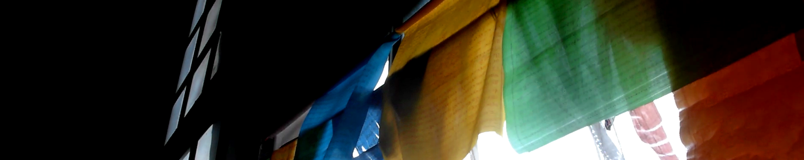
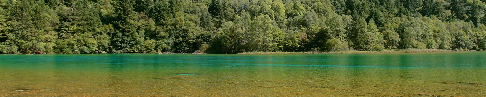
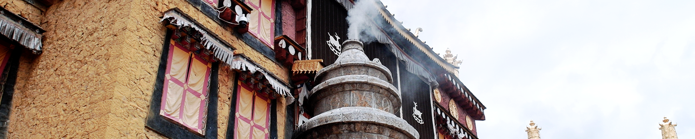
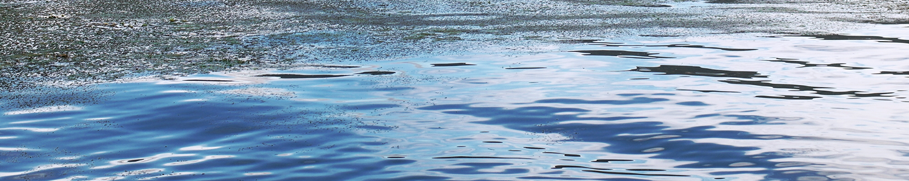
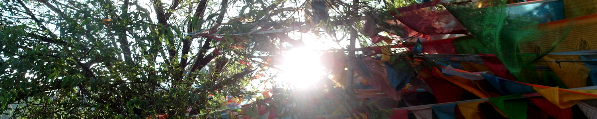
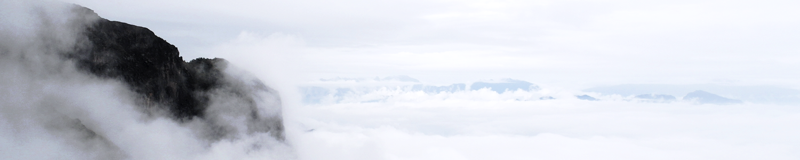

Songzanlin Monastery is the largest Tibetan Buddhist monastery in Yunnan. Construction of the monastery began in 1679 and was completed two years later. The monastery seems like a group of ancient castles and is composed of Zhacang and Jikang lamaseries. The gilded copper roof endows the monastery with strong Tibetan features and the 108 downstairs is an auspicious number in Buddhism. The main halls in the monastery are magnificent, and on both the left and right sides are wonderful frescos, depicting Buddhist tales and legends.
The monastery is full of treasures. There are a lot of golden figures of Buddha josses, golden lamps, Tibetan lections, silver censers and so on. All of these are wonderful collections accumulated from each dynasty.
Songzanlin Monastery is also known as the little Potala Palace. In 1679, Dalailama chose this place by divination, and it went on to become the uppermost public place in Yunnan. Annually, believers with their knees and foreheads knocking the ground at every step, come here to pray.

Called Dzitsa Degu in Tibetan, Jiuzhai Valley or Jiuzhaigou National Park is located in the Aba Tibetan and Qiang Autonomous Prefecture of Sichuan Province. It was declared a UNESCO World Heritage Site in 1992 and it belongs to the category 5 in the IUCN system of protected area categorization.
Jiuzhai Valley literally means "Nine Village Valley" and is named after the nine Tibetan villages scattered throughout the park. There is evidence of people living in the national park up to 3,000 years and the local people still hold onto many of their traditional ways of life.
The superb landscapes of Jiuzhai Valley are particularly interesting for their narrow conic karst land forms and spectacular waterfalls and lakes. Jiuzhai Valley is part of the Min Shan mountain and stretches over 720 sq. km with an extra buffer zone of 598 sq. km. The elevation of the national park ranges from almost 2,000m to over 4,500m. Jiuzhaigou is all about seeing! The colours of its lakes, trees and mountains are breathtaking and defy adequate description. The altitude changes within the valley to create continual variations of flora, which give each lake and waterfall a unique quality.

Dukezong, situated at an altitude of 3,200 meters above sea level, is the capital of Deqen Tibetan Autonomous Prefecture. It has a 1300-year history, during which time it has experienced both the flames of war and prosperity of frontier trade. Tibetans regard the shade of white as a sign of respect for their forefathers, the ancient Qiang people, who worshipped white stones. Shortly after the town was established, all dwellings were accordingly painted white. This is how Dukezong, Tibetan for "city of white stone", got its name.
On a clear night, the ancient town reflects a silver sheen. This has engendered to another epithet: City of Moonlight. Its counterpart is Niwangzong Town by the Naizi River, known as the City of Sunshine. The Sun and Moon cities gave rise to the song 'Sun and Moon in the Heart', which Tibetans have sung for more than 1,000 years.
Dukezong was a key stop on the Ancient Tea-Horse Trail and a focal point for Han-Tibetan exchanges. It is also site of the largest ancient Tibetan community.

Erhai Lake is the largest highland lake next to Dianchi and one of the seven biggest fresh water lakes in China. It means 'sea shaped like an ear' in Chinese. Implying that the lake is ear-shaped and as large as a sea. The lake covers an area of 250 sq. km and is located about two kilometers east of Dali. It is like a crescent lying between Cangshan and Dali city as seen from Cangshan Mount. In a sunny day, the crystal waters of Erhai Lake and the snow mantled Cangshan Mount radiate with each other. Thus the scene was commonly described as 'Silver Cangshan and Jade Erhai'.
The surrounding islands, temples and villages are worth visiting too. Golden Shuttle Island, and the nearby fishing community of Bai Minority do really deserve a visit with its attractive Bai culture and lifestyle, and because of the rare beauty of the lake and its surrounding scenery.
The most unforgettable Xiaoputuo Dao, originally devoted to Bodhisattva Kwan-yin, can be traced back to the 15th century. Though tiny, one can still experience and see the typical ancient Chinese Buddhist temple's unique architectural styles of its buildings' pointed eaves and decorations on this peninsular.

Since it first appeared in British novelist James Hilton's Lost Horizon in the 1939, it has been associated with the mystique of a place which could not possibly exist on Earth. In Tibetan,Shangri-la means the 'sun and moon in heart', an ideal home only found in heaven. There are lofty and continuous snowy mountains, endless grasslands, steep and grand gorges, azure lakes and the bucolic villages always leave a deep impression on visitors.
At an average altitude of more than 3,000 meters, the county is very difficult to be reached. Located at point where Tibet, Sichuan and Yunnan all meet, Shangri-La County is administered by Diqing Tibetan Autonomous Prefecture, Yunnan Province.
The region is inhabited by many different ethnic groups, with the Tibetans comprising the majority of the population. There you will have an opportunity to experience Tibetan life and learn about their lifestyle, religion and cuisine. The unique scenery, highlighted by plateaus, together with the fascinating ethnic culture makes the land very attractive and charming to visit.
Shangri-la is rich in natural resources from valuable herbs to rich mineral deposits and abundant animal resources such as golden monkeys, leopards and musk deer. This is a land full of natural wonders.

1 kilogram from Tiao Doon Lake, It's where Jigong mountain located. When a famous writer first visited here, he said 'this place definitely is as marvelous as Grand Canyon'. It has gorgeous endless mountains, a beautiful lake, waterfalls and huge meadows.
The most spectacular is the 2600-meter cliff, and you can see the sea of clouds if it's sunny. When it's foggy, Jigong mountain turns into a heaven, just beyond description. The shape of the very mountain is like a head of a rooster, that's how it so named.
Near Jigong mountain, there's a natural reserve of Black-necked cranes. During November to March, those migratory bird would fly to here.
However, without them, here is still like a utopia with a few old houses, horses, geese, ducks and so on. Here's a good place to see the sunrise, but it's really cold because it's situated at an altitude of more than 3,000 meters above sea level. And it really easy to become foggy after noon, so seize the time to get the beautiful views.